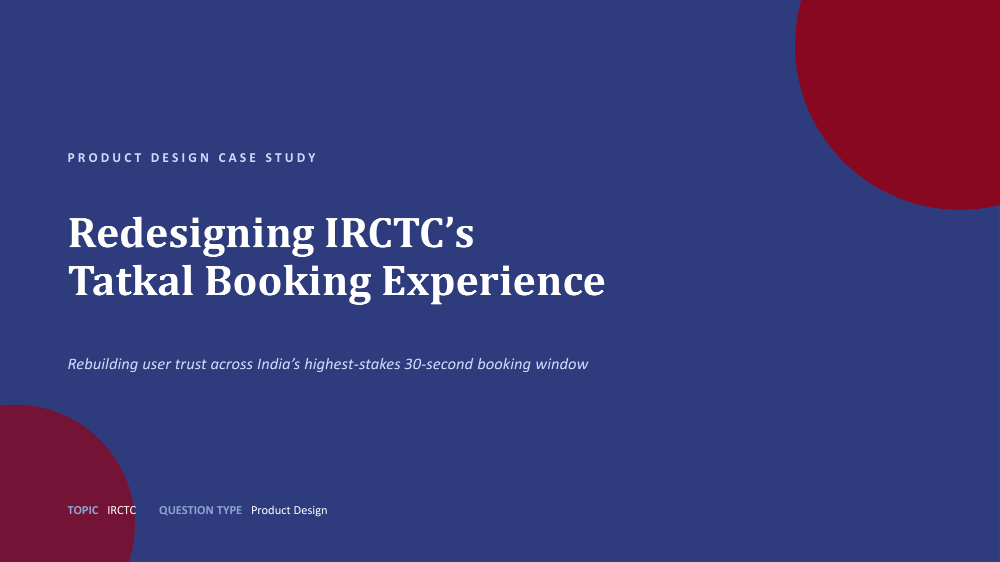
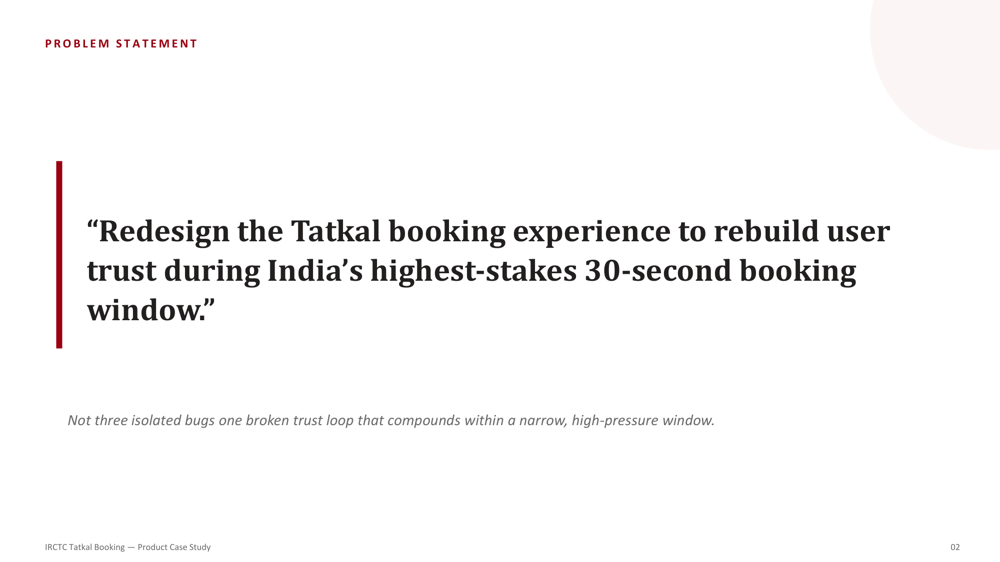
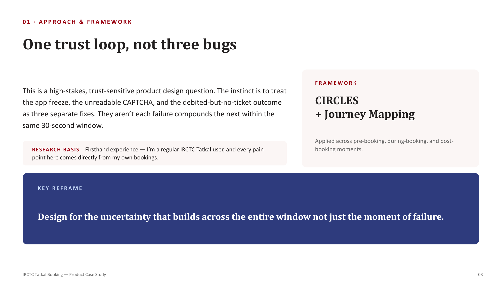
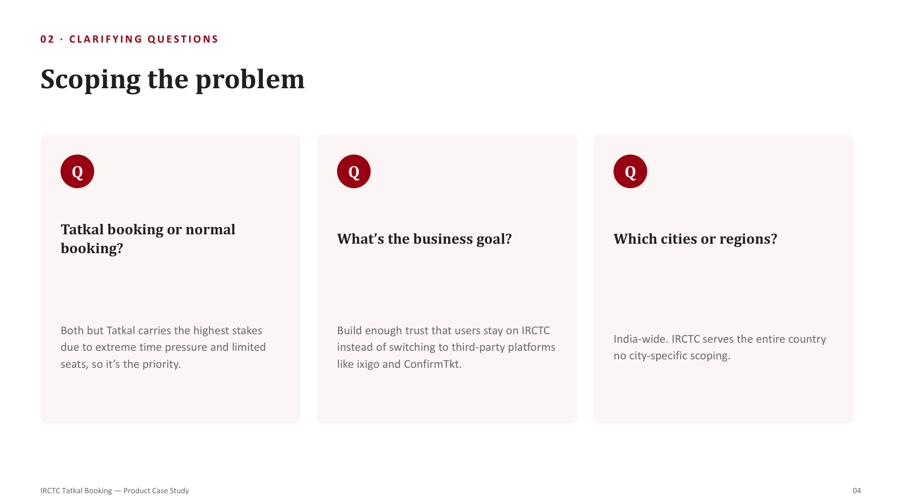
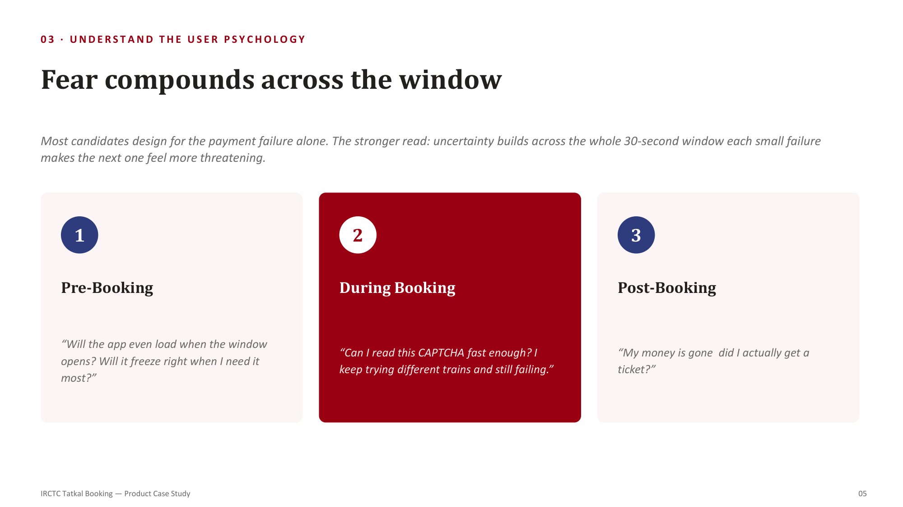
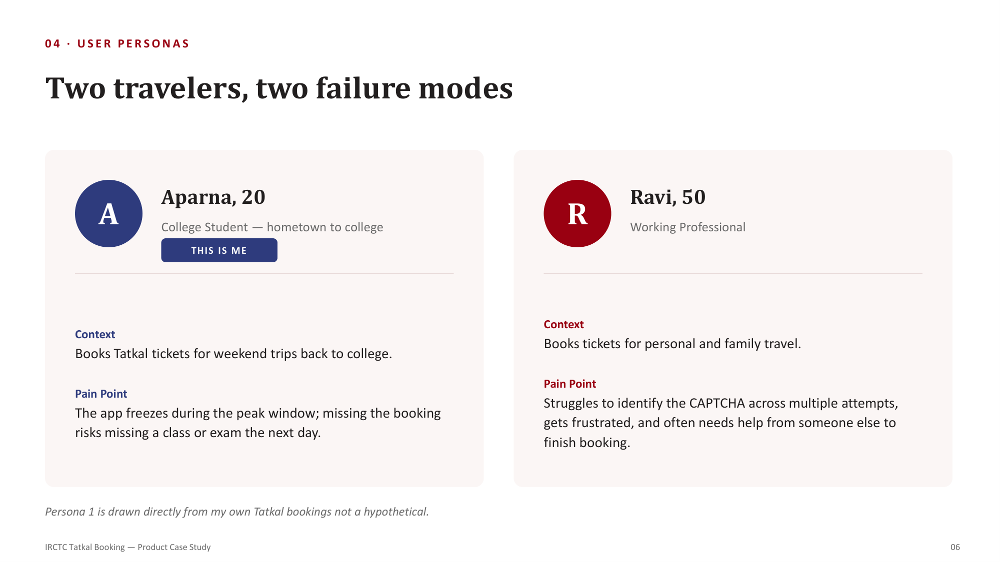
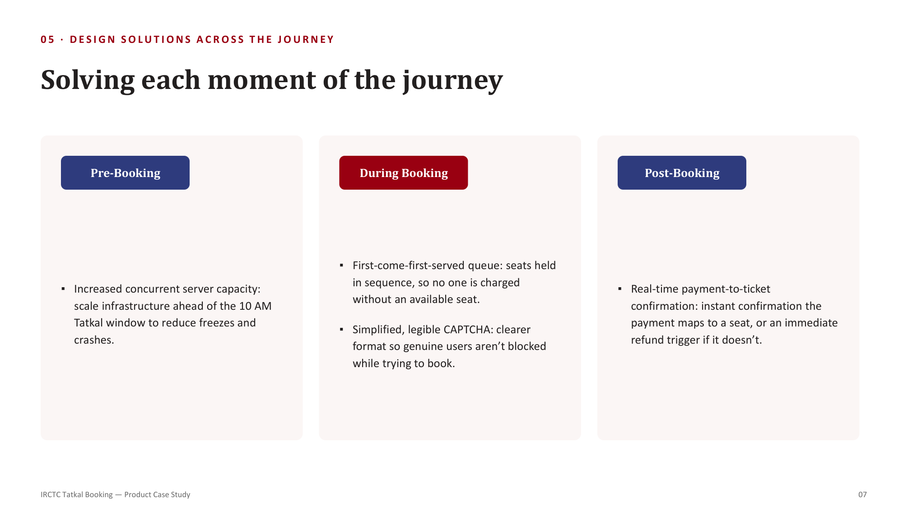
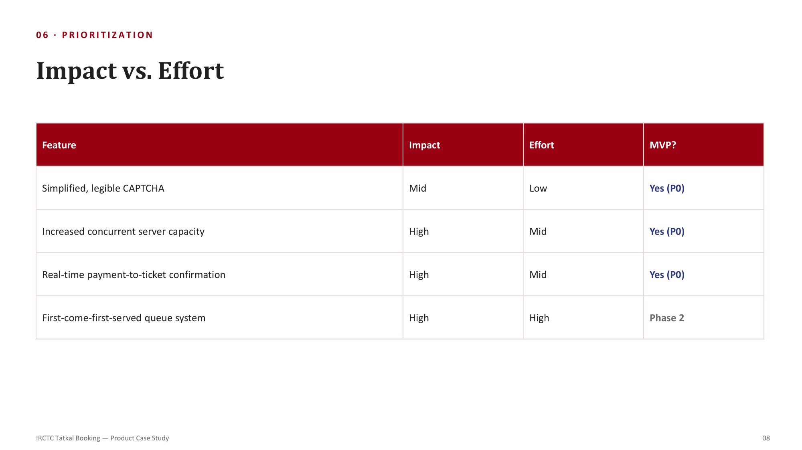
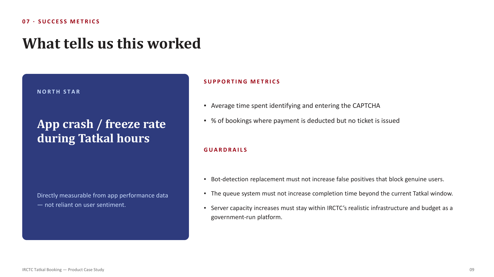
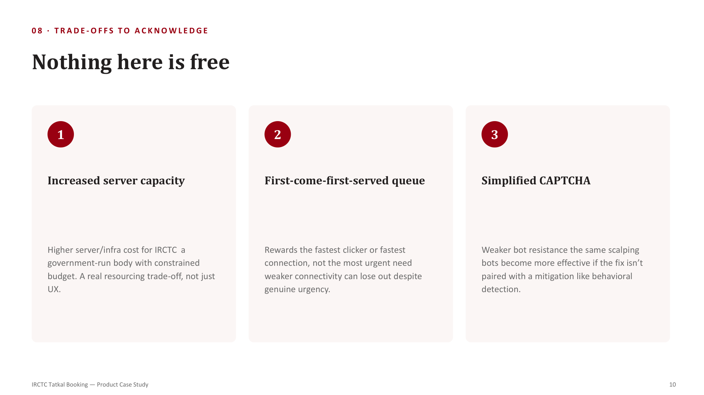

01. Overview
Tatkal is India's railway booking scheme for last-minute travel. Because seats are extremely limited and demand is nationwide, the booking window is a high-pressure, 30-second race. Millions of users experience transaction stress due to app crashes, unreadable CAPTCHAs, and payment sync failures.

02. The Problem
The prompt requires a redesign of the Tatkal booking window. The core challenge is treating these issues not as isolated bugs, but as a single compounding trust loop where each minor failure multiplies user anxiety.

03. Framework Approach
Applying the CIRCLES framework and User Journey Mapping to design for the uncertainty that builds across the entire transaction path:

04. Scoping the Problem
Scoping the product goals by focusing on high-stakes Tatkal bookings, building enough trust to retain users on IRCTC, and addressing the nationwide user base:

05. User Psychology
Rather than looking at payment failure in isolation, we map how anxiety triggers build across the pre-booking, during-booking, and post-booking moments:

06. User Personas
Addressing two distinct travelers with different technical capabilities and failure modes under pressure:

07. Solving Each Moment
Mapping structural design interventions to each phase of the journey, including concurrent server scaling, legible CAPTCHAs, and real-time confirmations:

08. Prioritization Matrix
Evaluating features using an **Impact vs. Effort** matrix to identify core P0 enhancements for the initial release:

09. Success Metrics & Guardrails
Establishing app performance telemetry metrics as a North Star, alongside supporting indicators and platform guardrails:

10. Trade-offs & Limitations
Evaluating the trade-offs of each proposed change, acknowledging that improvements to UX can affect infrastructure budgets, bot resistance, and queue equity:
